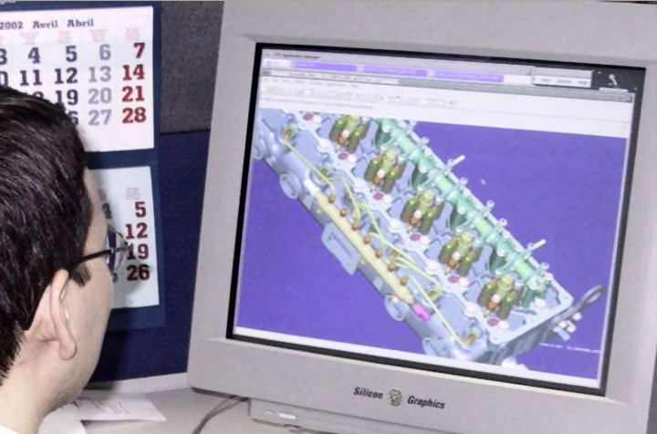
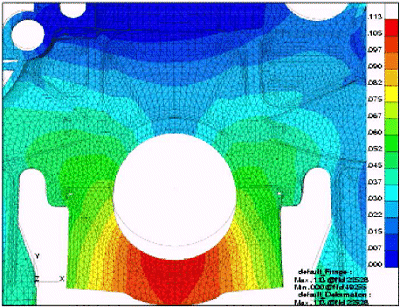
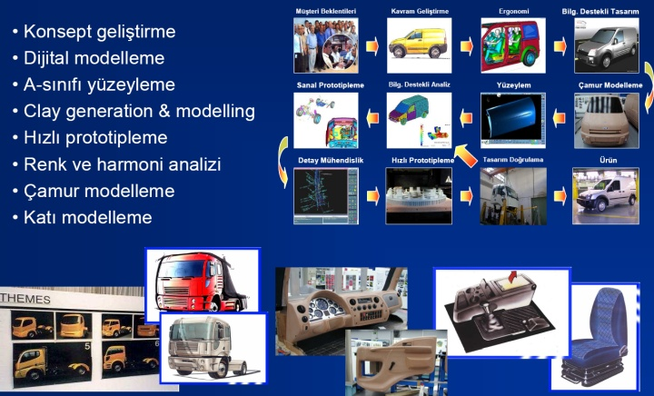
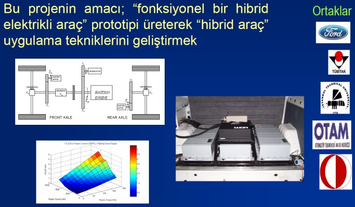

|


Tasarým Stüdyosu:
- Konsept gelistirme
- Dijital modelleme
- A-sýnýfý yüzeyleme
- Clay generation & modelling
- Hýzlý prototipleme
- Renk ve harmoni analizi
- Çamur modelleme
- Katý modelleme

Yakýt Pili - Konsorsiyum Projesi
- Yerli yakýt pili
bileþenlerinin yerli
imkanlarla
geliþtirilmesi ve
prototip
üretimlerinin
gerçekleþtirilmesi. Bu projenin amacý; "fonksiyonel bir hibrid
elektrikli araç" prototipi üreterek "hibrid araç"
uygulama tekniklerini geliþtirmek..
- Hibrid Elektrik Araçlarda
kullanýlmak üzere yerli elektrik
motoru tasarýmý ve üretimi
projesi
- Hibrid Elektrik Araçlarda
kullanýlmak üzere yerli batarya
tasarýmý ve üretimi projesi

Daha fazla bilgi için ilgili sunumu indirebilirsiniz: 9_FORD.pdf - 6,3MB
Kaynaklar:
- www.internethaber.com/news... > TÜBÝTAK'ýn hünerleri, 26-02-2009, Zübeyir Kýndýra, Ýnternet Haber
- www.mam.gov.tr/EE/sib/arac.html > TÜBÝTAK MAM >
EE - Stratejik Ýþ Birimleri (SÝB) > Güç Elektroniði ve Kontrol Teknolojileri > Araç Teknolojileri:
- www.tubitak.gov.tr/tubitak_content_files//BTYPD/btyk/18/18btyk_karar.pdf > Bilim ve Teknoloji Yüksek Kurulu 18. Toplantýsý, Geliþmelere Ýliþkin Deðerlendirmeler ve Kararlar, 24 Aralýk 2008 TÜBÝTAK UZAY Enstitüsü Toplantý Salonu, Ankara
- http://tubitak.gov.tr/tubitak_content_files/TEYDEB/etkinlikler/firma_sunumlari/9_FORD.pdf > Ford
Otosan, Dr. A. Murat Yýldýrým, ArGe Koordinatörü
(TÜBÝTAK TEYDEB destekli
Ar-Ge projeleri)
- www.1turk.net/haberler/h/980 > TÜBÝTAK ile Ford Otosan'ýn birlikte yapmýþ olduðu hibrid araçlar ve yakýt pilleri tanýtýldý, 1turk.Net, 12-11-2008
- TÜBÝTAK Enstitüleri Tarafýndan Yürütülmüþ veya TÜBÝTAK Tarafýndan Desteklenmiþ Projelere Örnekler
Ýlgili rapor:
TurkCADCAM Grubu'ndan; Yerli otomobil tasarým ve imalatý?.. / 2003'de Ford Otosan ilk kez lisansý ve mülkiyet haklarý
%100 kendisine ait bir kamyon ve dizel motor üretti; Ford Cargo, Ecotorq
Yavuz Kaya,
Kamyon Ürün Geliþtirme
Þasi Sistemleri, Ford Otosan
|